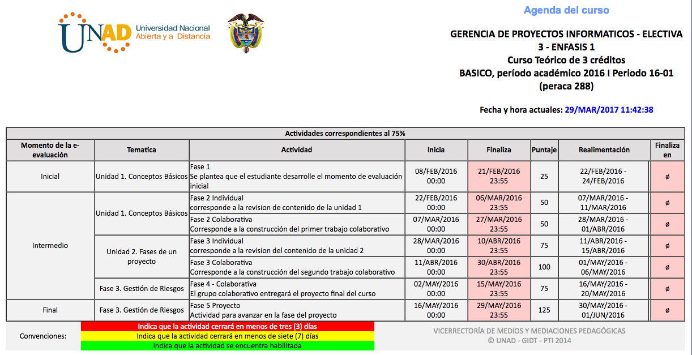

Gerencia de proyectos informáticos - 204030 es un curso de la facultad de Ingeniería y Ciencias básicas de la Universidad Nacional Abierta y Distancia.
La dirección y gestión de proyectos es la aplicación del enfoque de sistemas para la administración de tareas tecnológicas complejas o de proyectos cuyos objetivos se establecen explícitamente en términos de tiempo, costes y parámetros de realización.
El curso está compuesto de cinco fases evaluadas en 3 momentos ( Inicial, Intermedio y Final) con trabajos colaborativos.
